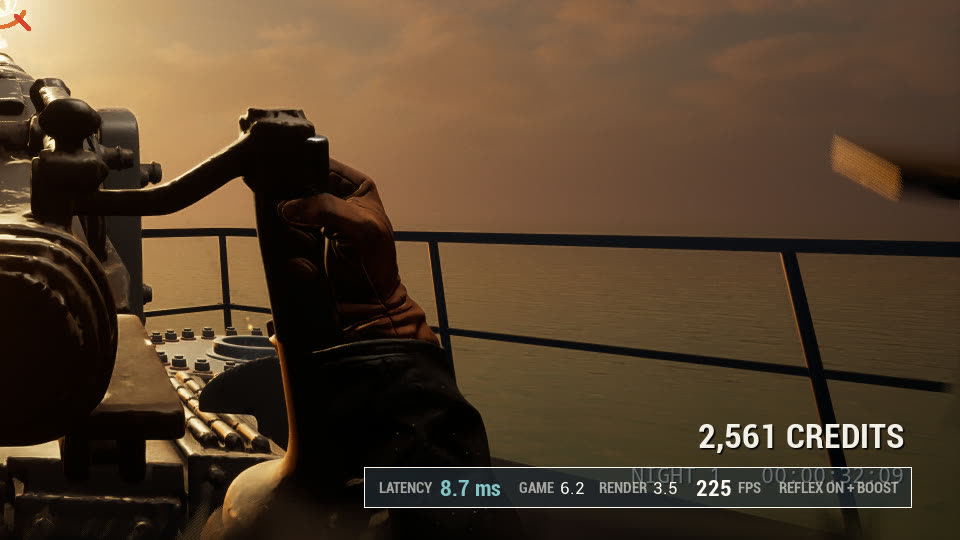
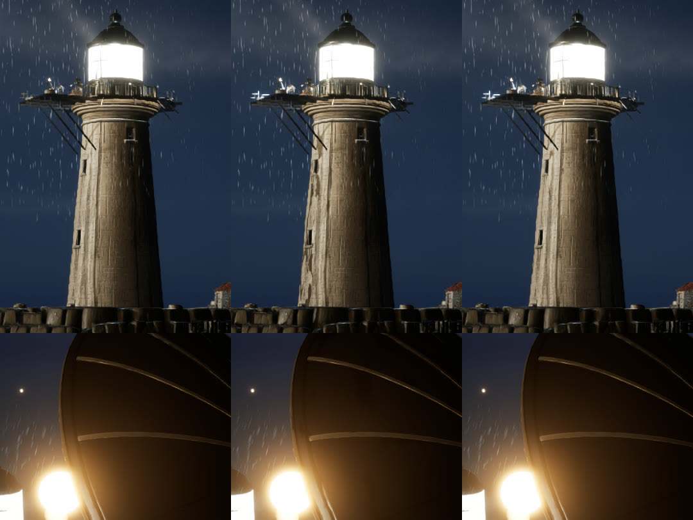
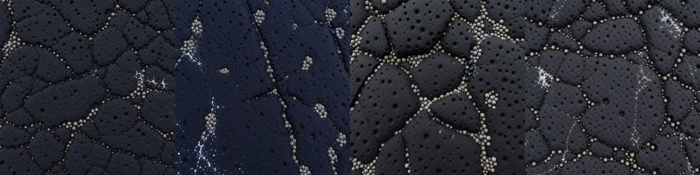
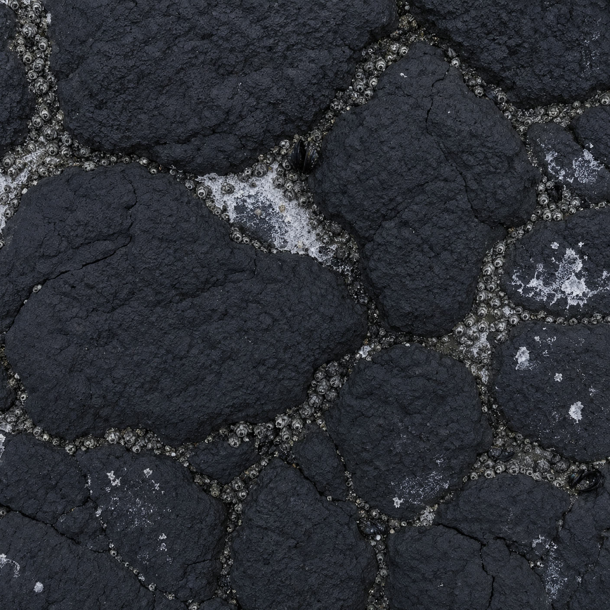
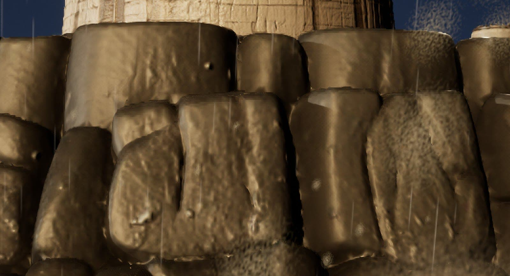
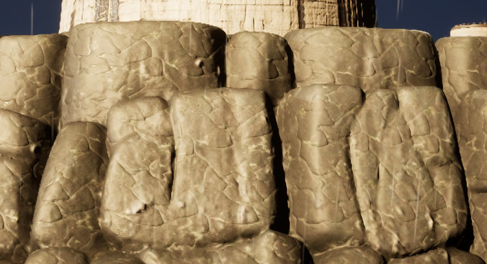
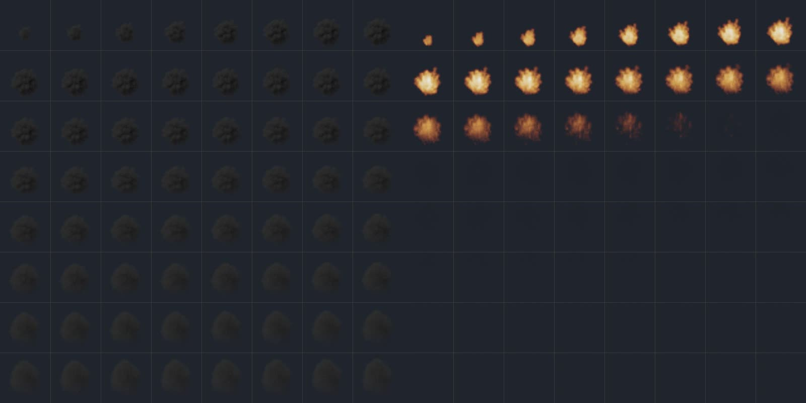
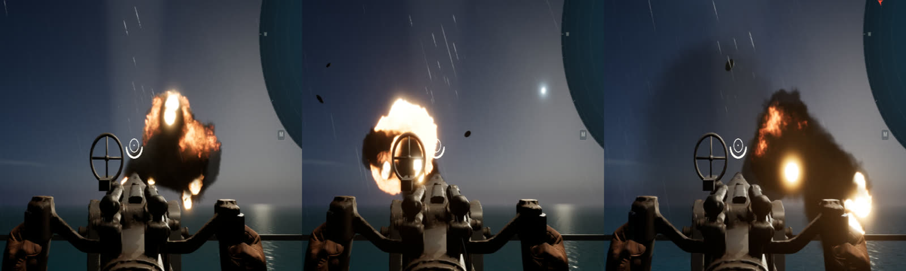

Day 2 Friday 13 November
Catching up, part two: rain on the graphics card, latency measured for real, photoreal rock, and explosions from Blender
9 pictures 1 failure 9 min read
Part two of the catch-up (part one is the hut, the tablet and the rules of the night): what the render, materials and effects lanes did between 13:30 and 17:30, told from their notes and pictures.
The storm's own weather
The first version's storm was the engine's sky with little else. The render lane wrote the weather in code and shader (merged at 15:12, more at 17:02):
- Rain as thin streaks wrapped round the eye. Their positions come from the game's clock, not from a simulation, so when CUT stops the world the rain hangs still in the air. The first pass was far too bright and looked like flying through stars at warp speed; it is now dimmer, sparser and widened with distance so it never shimmers.
- Wet surfaces: glossy and darkened patches laid over the rock from above, never below the waterline, and never on the keeper's own gun and gloves, which looked like glazed clay when they were wet.
- Rain on the lantern glass: each bead is a small refracting lens, drawn after the picture's tone mapping. The first version read as dark dots.
- Lightning: the first bolt was a light the sky itself listened to, so each strike turned the whole night into a clear blue day for half a second. Now the strike lights the tower and the rock, and the cloud flashes from inside by a second light that touches no object at all.
- Surf: the lane traces the rock's waterline at 96 points, puts foam along it and throws spray up the weather side every one to three seconds. Spray lit by a lightning flash first drew as a grainy white ball, and at 17:21 the foam still read as white cotton on the rock; both were made thinner and paler.
The rain cost about two milliseconds of the game's own thread every frame, because the processor moved thousands of streaks one by one. At about 17:00 the lane moved the work to the graphics card: each drop is placed by the card from a few numbers set once a frame. The game thread went from 4.1-5.5 ms to 2.1-2.9 ms a frame in the same test.
![The render lane's picture tour at 15:44, paused frames. Top and middle rows: a lightning strike over three frames; the cloud flashes pale blue, the tower and the rock light up, and surf foam shows on the rock. The white grain at the top right is a fault: a wreck's splash near the camera, lit by the flash, drew as noise (the effects lane has replaced that material since). Bottom: the gun in the storm, and a scout at night in two lighting modes: MegaLights, the engine's renderer for many lights, made no visible difference on a night's few lights and stays off.](media/full/2026-11-13-1544-storm-tour.jpg)
Latency, measured for real
The last entry's first reading was 8.2 ms in a small window. The full measurement, at 13:47 to 13:51, used a 1920 by 1080 window with nothing else running on the card and the bot at the gun:
| Run | Frames a second | Render thread | Graphics card | Input to picture (Reflex) |
|---|---|---|---|---|
| Ray tracing off, Reflex On + Boost | 220-245 | 3.1-3.5 ms | 3.0-3.4 ms | 7.5-8.8 ms |
| Ray tracing off, Reflex off | 193-207 | 4.8-5.1 ms | 3.1-3.3 ms | 13.1-15.9 ms |
| Ray tracing on, with its shadows | 81-108 | 7.3-10.9 ms | 4.5-5.3 ms | 16-40 ms, mostly 21-27 |


Verdict: ray tracing stays off by default. On the graphics card it is cheap (about 1 to 2 ms), but live it makes the engine's render thread the bottleneck and pushes the latency over the design's 20 ms target, and at night its pictures are not clearly better. It stays in the settings for players who want it.
One fault from the last entry is solved: the black blotches that ray-traced shadows put on the tower and the saucers came from the simpler stand-in meshes the ray tracer used. With the engine's cluster acceleration structures, the rays meet the full detailed geometry instead, and the blotches are gone.


NVIDIA DLSS Frame Generation was tried as well. It works on this engine version: at 2x the game showed 361 to 384 frames a second against 185 to 195 rendered. It runs only while the game's window is in front: NVIDIA's code switches it off otherwise, which is why test runs started by a script beside other work showed no generated frames until the lane found the check. It adds about 3 ms of latency for frames this card does not need, so it will be an option, off by default, and it goes into the game on Saturday only if the packaged build compiles it. Later, longer runs read 11 to 13 ms, rising to 15 or 16 ms when many saucers are in the air: the game's own thread, not the graphics card, now sets the latency, and it is the next thing to make faster.
Photoreal surfaces, from a newer model
The rock, the tower, the gallery's iron and the hut had the first version's baked textures, soft up close. The materials lane, started at 15:06, uses Marigold V2: its normals and depth models read a surface's shape from a single photograph (its de-lighting model, which reads the colour without the light, was on the entry's list from the start). The normals and depth models are the first added under the rule the developer set at 14:50, that a newer model may be used once its licence has been checked: Apache-2.0, which allows a sold game and excludes no country; the weights are safetensors files from a known maintainer's repackage, pinned with their checksums before the first download.
The source pictures are seamless surface photographs from MOSS-Image. The fast setting the project uses by default failed here: at this fine scale it printed the same star-shaped flecks of salt across every seed. The full-quality setting (50 steps) made clean rock.


PromptA flat texture photograph taken straight down from directly above onto a rough surface of wet black basalt rock at the tide line of a cold…144 words
A flat texture photograph taken straight down from directly above onto a rough surface of wet black basalt rock at the tide line of a cold northern sea, filling the whole frame edge to edge, an area about one metre across. Dark charcoal-black volcanic rock with small vesicles and pits, fine fractures and a few shallow cracks, the surface damp and dark; scattered clusters of small pale grey acorn barnacles in the crevices, thin patches of white dried salt crust, a few tiny dark blue mussels in one crack. Even, flat, diffuse overcast light from above, no cast shadows, no highlights, no glare, no perspective, no horizon, the same detail and density everywhere across the frame so it can tile. Photorealistic macro texture photograph, sharp from corner to corner, natural colour. No text, no letters, no numbers, no logos, no brand names, no markings.


PromptA flat texture photograph taken straight down from directly above onto a rough surface of wet black basalt rock at the tide line of a cold…154 words
A flat texture photograph taken straight down from directly above onto a rough surface of wet black basalt rock at the tide line of a cold northern sea, filling the whole frame edge to edge, an area about one metre across. Dense, fine-grained charcoal-black volcanic rock, its surface rough and crystalline with irregular natural fracture edges and a few shallow cracks, damp and dark; clusters of small pale grey acorn barnacles crowded in the cracks and hollows, irregular thin patches of white dried salt crust, a few small dark mussels wedged in one crack. Even, flat, diffuse overcast light, no cast shadows, no highlights, no glare, no perspective, no horizon, the same detail and density everywhere across the frame so it can tile. Photorealistic texture photograph taken with a high-resolution camera, sharp from corner to corner, natural colour, true to life. No text, no letters, no numbers, no logos, no brand names, no markings.
Each picture is made to tile, Marigold reads its colour, normals and depth, and a script packs them into two textures per surface (basalt dry and wet, white masonry, black iron, the hut's stone and slate). One master material lays them over every mesh. It is built so that it cannot look worse from afar: averaged over a tile, it gives back the mesh's own baked colour, so the island seen from the sea looks as before, and only up close does the new detail show. Wetness, the dry and wet basalt by height above the sea, and the tower's masonry and iron come from masks in the same material.
The second round, at 16:40, was a failure the pictures showed at once: everything too dark and glossy, like wet plastic, and white puddle reflections on the rock tops that read as snow under a flash. The material's own wetness had stacked on the render lane's wet patches. The third round made the material's own wet lighter and rougher and asked for the render lane's patches at about a third of their strength; it went in at 17:13.


Before


After
Explosions simulated in Blender
The developer wants the explosions from Blender alone. The effects lane runs Blender's own smoke and fire simulation from a script with no window, renders each simulation with Blender's Cycles renderer, and packs the frames into sprite sheets: seven sheets of 64 frames (a scout's pop, a harvester's boom, a big slow fireball for carriers and motherships, a smoke trail, a fire trail, a splash, and flat foam), all in one texture, so every sprite of every explosion sorts together in one material. Each frame carries four layers: the smoke's shading, the cloud lit from inside by its own fire, the fire itself, and its opacity.


The atlas went into the game at 16:42. All the explosion sprites together cost 0.2 to 0.4 ms of the game thread with 220 to 290 of them on screen. The developer saw the picture below at 16:56 and liked it; he will judge them when he plays.

